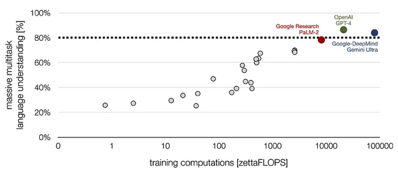

AI as Present-Day Reality
Artificial Intelligence (AI) is no longer a distant dream but a present-day reality, embedded deeply in our lives. From managing energy grids to optimizing urban systems, AI is already delivering efficiencies that were once unthinkable. Yet, as we stand on the brink of an AI revolution, we must ask ourselves: how can we ensure AI works for the common good? And perhaps more provocatively, will AI not only assist but also dominate future breakthroughs — both scientific and creative?
At its core, AI is a tool — a tool that can be wielded to address some of humanity’s greatest challenges, from decarbonizing our economies to improving healthcare systems. By processing vast amounts of data far beyond human capabilities, AI offers insights that can transform industries. For instance, AI-driven cyber-physical systems (CPS) are helping optimize industrial processes, reducing energy consumption, and cutting emissions. In energy systems, AI can predict supply and demand, making renewable energy integration more seamless. All this, we have discussed in our 2022 book “Intelligent Decarbonisation” in detail propped up by contributions from leading thinkers and practitioners reporting on AI’s impact in their field of expertise.
The Rise of Large Language Models
One of the most significant advancements in AI is the development of large language models (LLMs) powering platforms like ChatGPT, Claude and Google’s Gemini. LLMs are already transforming how we learn, investigate, and create. Students use LLMs to deepen their understanding of complex topics, researchers leverage them to scan vast quantities of literature in seconds, and journalists use AI to analyse trends and inform the public.
These models have become indispensable tools for authors, policymakers, and anyone seeking to make informed decisions in a data-driven world. By offering access to knowledge, AI fosters the democratisation of information, making expertise more accessible to all.
Companies and professionals shying away from AI adoption will lose out quickly. The democratisation of information through LLMs is not a trend — it is a paradigm shift.
Real-World Impact: AI for Good
Real-world projects are already showcasing how AI can be harnessed for good. Google DeepMind’s AI-driven energy optimisation in data centres has reduced energy consumption by over 30%, directly contributing to the fight against climate change. Microsoft’s AI for Earth initiative is tackling environmental challenges like species protection and ecosystem monitoring. In healthcare, AI4Health is using AI to improve patient outcomes by enhancing diagnostics and optimising healthcare systems. These applications offer just a glimpse of AI’s potential to revolutionise various fields for the better.

The Computational Power Enabler
One critical enabler of these breakthroughs is computational power — an often overlooked but fundamental driver of AI’s growing influence. The graph below shows the accuracy of current AI systems using the MMLU Benchmark (y-axis) while the x-axis shows the training computations used on a logarithmic scale in zetta FLOPS (that’s a billion trillion calculations per second!).
For example, GPT-4 — released by OpenAI in 2023 — achieved an 86% accuracy on the MMLU benchmark, which far exceeds the 34.5% accuracy achieved by non-expert humans, and comes close to the 89.8% accuracy estimated for hypothetical human experts who excel across all 57 subjects covered in the test.
With AI technology improving and computational power increasing steadily, the impact of AI will be unfathomable — what will happen when issues like quantum error correction (QEC) are solved and quantum computing enters the scene?
This ever-increasing computational power is setting the stage for AI to reshape more than just data-driven tasks; it’s poised to redefine how we approach everything from complex scientific puzzles to creative expression and conflict resolution.

Nobel Prizes for AI
At the time of writing, two out of three of the 2024 Nobel Prizes for natural sciences have been awarded to pioneers whose AI research is reshaping our understanding of the world. One was awarded for foundational work in neural networks, the architecture that powers modern AI systems. The other was for applying AI to solve one of biology’s most complex problems — predicting the 3D structures of proteins, a breakthrough made possible by AI’s unmatched processing power and pattern recognition abilities.

This raises a tantalising question: in the future, will all six Nobel Prizes, across the sciences, economics, literature and contributions to global peace, involve breakthroughs driven by AI? Could we be moving toward an era where AI is not just a tool but an active player in every groundbreaking discovery?
The Dark Number of AI Usage
Moreover, AI has a shadow impact as no one knows how many productive workers — researchers, developers, or analysts — use LLMs for brainstorming, troubleshooting or producing advanced computer code, complicating a realistic impact assessment.
In German we use the beautiful word Dunkelziffer, “dark number,” which implies that next to official use there is ample quiet utilisation of something. I reckon that the vast majority of theses and assignments handed in at universities these days will at least be partially written by LLMs.
AI and the Creative Frontier
Beyond science, the creative realm is also undergoing a transformation. AI has already begun to encroach on areas once thought to be the exclusive domain of human ingenuity. Marcus du Sautoy’s “The Creativity Code” delves into the fascinating intersection of AI and creativity, revealing that AI-generated hypothetical compositions in the style of deceased composers have fooled even the most discerning experts. The question is no longer whether AI can imitate human creativity but whether it will eventually surpass it.
The question is no longer whether AI can imitate human creativity — but whether it will eventually surpass it.
— Oliver Inderwildi
In literature, will the most advanced and rule-breaking novels of the future be penned by human authors or generated by AI systems capable of analysing patterns and styles to create something entirely new? The same applies to music. Will the next revolutionary sound come from human musicians, or will artificially generated tunes — perfectly attuned to listener preferences — outshine human compositions? As AI learns to hit the perfect emotional notes, could human artistry be overshadowed by algorithmic precision?
Could AI Win the Nobel Peace Prize?
If AI can already contribute to breakthroughs in science and creativity, could it also bring new insights to one of humanity’s oldest challenges — peace-building? Will AI suggest solutions for the most complex and longstanding issues such as the Middle East conflict or the potential nuclear annihilation? These conundrums have attracted some of the smartest scholars who have suggested various solutions — all to no avail at all.
Will — in a few years — a highly advanced AI suggest a solution that even the most intelligent people were unable to divine? Would then this AI rightly be awarded with the Nobel Peace Prize?
The Avalanche Effect
Looking ahead, the possibilities are both exhilarating and unsettling. AI’s role in shaping the future of science and creativity is expanding rapidly. While AI can certainly accelerate breakthroughs and offer profound insights, we must also consider how to ensure it remains a force that complements human innovation rather than replaces it. The question remains: will AI be the ultimate collaborator in our quest for knowledge and expression, or will it take the lead, reshaping not just the future but our very definition of creativity and genius?
While futurists may offer predictions, the true scope and speed of AI’s transformation are beyond even the most educated guesses. As AI advances itself, it triggers an avalanche effect: programmers use LLMs to create, improve, and debug code — each improvement making the next iteration even stronger. Like an avalanche gathering momentum, what begins with small advances will unleash tremendous forces of innovation as breakthroughs build upon one another. This compounding progress will accelerate change in ways we have yet to fully comprehend, driving transformations far faster and deeper than we can currently envision.
While Geoffrey Hinton told CNN upon receiving the most prestigious academic accolade that AI’s impact “will be comparable with the industrial revolution,” I believe the AI-induced leaps we will witness will dwarf anything seen during that period and that technological singularity is approaching at breakneck speed.
— Oliver Inderwildi
In a world where AI is already shaping Nobel Prize-winning research, it is only natural to wonder — what will the future bring?
Further Reading
Books & Publications
- O.R. Inderwildi & M. Kraft, “Intelligent Decarbonisation”, Springer Nature, 2022.
- M. du Sautoy, “The Creativity Code: How AI is Learning to Write, Paint and Think”, Fourth Estate, 2019.
AI Breakthroughs & Nobel Prizes
- The Nobel Foundation, “The Nobel Prize in Physics 2024 — Hopfield & Hinton,” nobelprize.org, 2024.
- The Nobel Foundation, “The Nobel Prize in Chemistry 2024 — Baker, Hassabis & Jumper,” nobelprize.org, 2024.
- Google DeepMind, “AI for Data Centre Energy Efficiency,” deepmind.google, 2024.
Data & Benchmarks
- Epoch AI, “MMLU Benchmark: Measuring Massive Multitask Language Understanding,” Our World in Data, 2023.
- D. Hendrycks et al., “Measuring Massive Multitask Language Understanding,” ICLR, 2021.